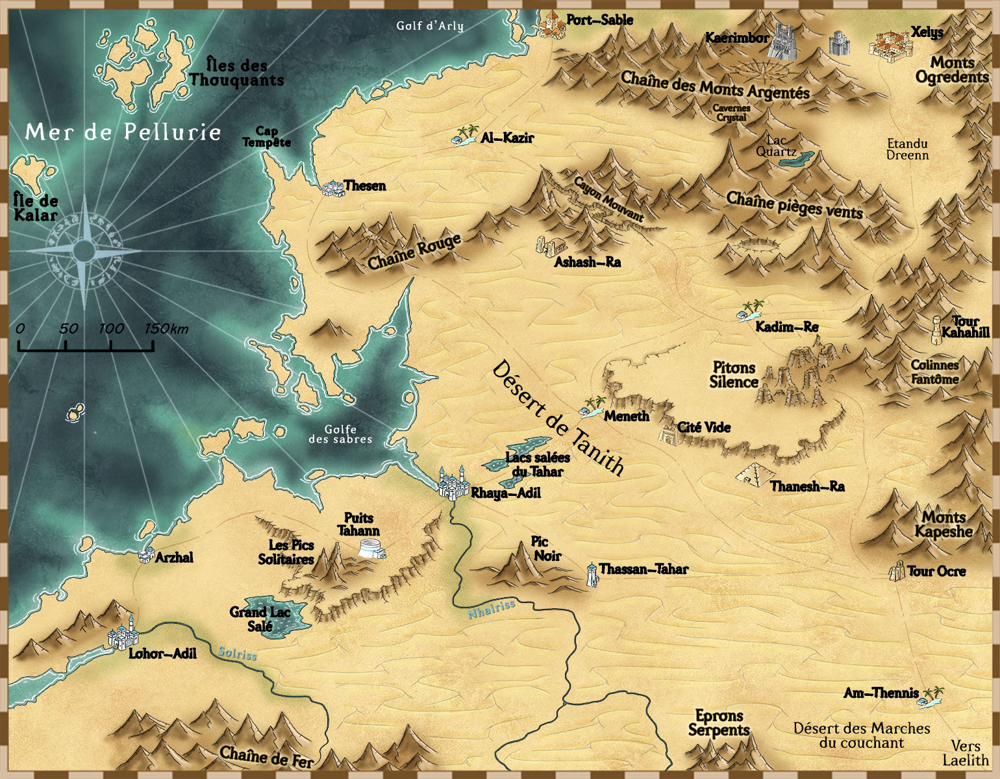

Personnages:
- Gutard:
- Gutard est un des prisonniers de la prison souterraine du royaume de Lorem, il y fut incarcéré en tant que personne dangereuse pour la population. En effet Gutard était un combattant clandestin reconnu dans le marché noir du royaume. Il participait à de nombreux combat et de temps à autre il se battait contre des personnes aléatoires si ces dernières le vexaient ou alors dans le simple but de se défouler. Il fut interpelé lors d'une bagarre dans un bar populaire de la capitale.
- Il considère ses missions comme des permissions de sorties. De ce fait son seul et unique objectif dans ses missions et de s'amuser un maximum avant de retourner en détention. Bien naturellement si une occasion de s'évader se présente à lui, il sautera dessus pour partir de l'enfer dans lequel il est enfermé.
- La modification génétique qu'a subit Gutard est une augmentation drastique de sa masse musculaire. Ce dernier s'est vu sa force démultiplié et se colosse qui dominait déjà la monde part la force est réellement devenu un monstre de puissance. Il se bat à l'aide de ses points mais manie tout de même très bien l'art du couteau.
- Gutard possède avec lui son couteau de toujours et de nombreuses seringues de morphine qu'il n'hésitera pas a user en dernier recours.
- Aloux:
- Aloux était un barde activiste qui essayait de dénoncer les sombres actions du roi, il se fit arrêter lorsqu'il commença parler de l'existence d'une mystérieuse prison souterraine. Sa disparition soudaine engendra la création d'un immense partie contre le Roi qui cherche de la même manière qu'Aloux à dénoncer la vérité que le roi cherche tant bien que mal à dissimuler.
- Lors de son arrestation le nouvel objectif d'Aloux fut de devenir le parfait petit soldat pour tenter de se faire bien voir par le roi et ainsi pouvoir monter les échelons et gagner la confiance de la royauté. Derrière ça se cache en réalité l'envie d'infiltrer ce régime pourri de l'intérieur et de récolter un maximum d'informations afin de pouvoir les faire éclater au grand jours. Ainsi en tant que chef de la mission il va veiller à son succès et à la coopération des deux prisonniers qui l'accompagnent.
- Aloux a subit une modification génétique bien particulière puisque cette dernière lui permet d'avoir une sensibilité sentimal décuplé. Cela lui permet de comprendre dans quel état mental sont les personnes qui l'entoure afin d'user des actions et des mots justes qui lui permetront de tirer ce qu'il veut de ces dernières. Cela signifie qu'il peut les rendre plus fortes, les démoraliser, les rendre coopératives et bien d'autre choses encore. Par ailleurs étant à l'origine un barde, Aloux use souvent de son instrument de prédilection l'accordéon pour toucher d'une manière encore plus puissantes les gens qui l'entourent.
- aloux possède avec lui son accordéon, un amplifieur de son lui permettant d'être entendu de tout un champ de bataille, et des points américain relié à son accordéon amplifiant la puissance de ses coups de part les notes jouées. Par ailleurs Aloux possède un harmonica qu'il garde en arme d'ultime recours.
- Gabinx:
- Gabinx est un voleur qui fut attrapé en train d'essayer de s'introduire dans le palais du roi. Ce voleur ne possède pas réellement d'histoire apparente, personne ne sait d'où il vient ni quels sont ses objectifs.
- De part le manque de claireté de ses objectifs, le roi hésite toujours avant de l'envoyer en mission et ne le convoque qu'en cas de crise. Gabinx vit au jour le jour, ses objectifs peuvent changer du jour au lendemain, y compris le jour durant ses missions. Il pourrait aussi bien vouloir à tout pris s'évader lors d'une mission que de vouloir voler un maximum de choses ou encore juste accomplir la mission qu'il trouve amusante.
- Gabinx fut amélioré au niveau de ses articulations lui octroyant ainsi une mobilité haurissante. Il peut désormais faire des sauts et toutes sortes d'acrobaties paraissant fluide et divine. Il possède un excellente acuité visuelle lui permettant de toucher des cibles se trouvant à des centaines de mètres, et maîtrises à la perfections le combat avec des dagues.
- Gabinx possède deux dagues, un lanceur de fumigène, ainsi qu'un grappin lui permettant d'accroitre une nouvelle fois sa mobilité.
Dans cette période de révolution industriel, chaque royaume essaie de ce démarquer des autres à l'aide d'innombrables avancées scientifiques. Le royaume de Lorem se démarque dans le domaine de la modification génétique en l'espoir de créer de super soldats, et à posteriori de super citoyen. L'application de ces modifications génétiques est cepandant extrêment douloureuse et très peu sûre, elle entraîne d'ailleurs bien souvent la mort du sujet. Face à ça le roi du royaume fit construire une prison souterraine inconnue du grand publique dans laquelle sont enfermés tous les prisonniers de guerre, les espions, les traîtres à la couronne et bien d'autre personne. Le but de cette prison est la construction d'une armée de soldat génétiquement modifié. Un jour le roi convoqua trois de ces prisonniers pour leur donner une mission. Cette mission est d'intercepter un message circulant entre deux royaumes complotant contre le royaume de Lorem. Il a été transmis aux prisonniers la date et le lieu de passage de ce message. Il doivent l'intercepter et si possible le transmettre au roi de Lorem pour prendre conscience de l'ampleur de cette alliance et de ce complot. Les prisonniers eux malgré leur liberté d'action sont vêtu d'un collier qui explosera au bon vouloir du roi, roi qui n'hésitera pas à les faire sauter s'ils ne respectent pas les ordres.
